別府大仏/大分県別府市
昭和3年3月28日、中外博覧会開催直前の泉都別府に大仏が誕生した。 その大きさは建造当時、日本一の高さを誇る24メートル。 コンクリート製の大仏の草分けとして昭和2年に完成した愛知県の聚楽園大仏（18.8メートル）と並ぶ貴重な大仏だ。 国際観光地別府の象徴として人々に愛されてきた、かどうかは知らないが長い間別府に君臨し続けたのは間違いないこの大仏は大変残念な事に老朽化により平成元年取り壊されてしまった。 昭和をきっちり生き抜いたコンクリ大仏の大先輩に敬意を表しつつ、現在は姿を消してしまった別府大仏のかつての姿（特に内部）に迫ってみようと思う。
一枚の写真を見ていただこう。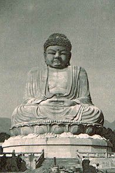 これが在りし日の別府大仏の姿である。 手前の階段にバケツや砂が積まれているのを見ると落慶直前の写真と思われる。 61年後に取り壊されることなど全く感じさせない勇姿である。 どこか西郷隆盛どんを彷佛とさせる豪快な九州男児顔＆体型、そして頭のバランスがやや大きめなのは、4頭身石仏帝国の大分というお土地柄とは無縁ではあるまい。 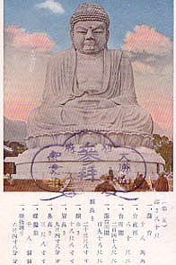 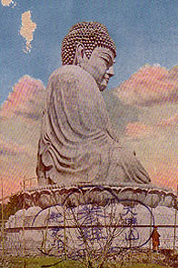 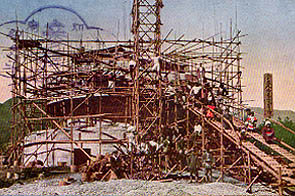 こちらは昭和3年に発行された絵葉書。 台座の右横に穴が開いていて人が入れるようになっているのが判る。 また、横から見た絵葉書には蓮華座の上に手摺が見える。 別府大仏の内部は3層になっていたそうだ。 建設当時の資料や実際に中に入った方の話やその他もろもろを総合して別府大仏の内部に迫ってみたい。 入口には地蔵や閻魔像がありその先は戒壇巡りになっていたという。 戒壇巡りを抜けると80畳の大ホール。そこには三尊仏や聖徳太子の像の他、各宗派の開祖の像が並んでいたそうだ。 次に二階へ登って行くとそこは三十三観音巡り、八十八ケ所巡りの写し霊場があったという。 さらに3階に行くと6つの門があり、それぞれの門の奥には不動明王、薬師如来、大日如来、双子権現、文殊菩薩、善光寺菩薩が祀られていたそうだ。 ところで双子権現って何だ？ さらに途中、2階かと思われるが、外に出られるようになっていたらしい。絵葉書で見られる手摺が付いた蓮華座部分に出られたのであろう。 さらに螺旋階段で上まで登れて顔の辺りまで行けたという地元の方のたまらない話もある。未確認だが。 ちなみに地元の方は大仏があった地名から野口の大仏とか天満の大仏と呼んでいた。 以上をまとめるとこの大仏が創世期でありながらすでに参拝アトラクションの標準スペック全てを備えていた可能性が高い。 現在のコンクリ大仏の兄貴分といってイイだろう。 しかも戒壇巡り付き。盛り沢山すぎるぞ。
さて、ここで別府大仏をつくった人物についても触れねばなるまい。別府大仏の創建者は岡本榮三郎氏という地元の事業家である。 別府大仏建立の経緯が書かれた「大仏山縁起録」（昭和3年刊）によると岡本氏は「或る事業」にて莫大な富を手にしたそうだ。 どんな事業か詮索するのはやめときます・・・ 問題はこのように巨万の富を得た岡本氏がどうして大仏を建立したのか、という点だ。 岡本氏の母が息子のあまりのお金大好きぶりに仏道を勧め、とある尼僧に説得を依頼したところから話は始まる。 最初はいやいや聞いていた岡本氏もその尼僧の熱心な説得の末、仏道に帰依することになったそうな。時は大正13年の事。 そして氏は私財を投げ打って大仏を建立する事を決意し、僧籍を得て名前を岡本榮信と変えたのである。 すごいですねえ。今まで仏なんぞこれっぽっちも信じていなかった人が尼僧に説得されて主体的に大仏造るまでになっちゃうんですねえ。 岡本氏は大仏建立を決意し、翌大正14年には大仏建立主旨発表会を行っている。この時点で別府大仏のコンセプトはほぼ決まっていた。 それは全国から遺骨や遺髪を集めてコンクリートに混ぜ込むという骨仏の大仏バージョンをつくることだった。 恐らく大阪の一心寺の骨仏から着想を得たのだろう。実際岡本氏は大仏建立を決意した後、僧籍を得るために京都に出向いた際、まっ先に一心寺に参拝している。 遺骨の総量は判らないが少なくとも数万から数十万柱の遺骨がコンクリートに混入されたようだ。 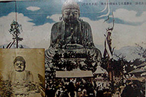 かくして大仏は無事完成し、落慶式が執り行われた。 見にくいが膝や肩の上にまで人が乗っている。どうやって登っているのかと写真を良く見たら梯子かけて登ってます。 こうしてかつてのお金大好き君も国士の僧侶となり自らの名を冠した榮信寺の住職となった。大仏の脇には茶屋や休憩所などもつくられ大変な賑わいだったそうだ。 お伽話なら「こうしてみんな幸せに暮らしましたとさ、めでたしめでたし」で終わるところだが現実は残酷だ。 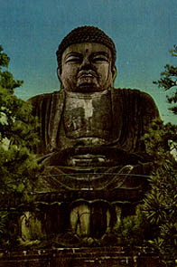 写真は昭和29年に発行された絵葉書。 大量の遺骨＆遺髪を混入するというかなりアナーキーな工法によりコンクリートの強度はあまり強くなく、通常の鉄筋コンクリート造の建造物よりも短い時間でもろくなってしまったと考えられる。 築20数年、この時点ですでに結構痛みが目立って来ている。 見にくいが蓮華正面の部分にヒビが入っている。そして全体的に黒ずんで来ている。 この後、正確な時期は判らないが昭和40年前後に参拝は危険、という判断のもと内部拝観は閉鎖されてしまった。 それからさらに20年、老朽化が激しくなり、ついに取り壊すことになった、というのが別府大仏の短い一生である。 合掌〜
現在、大仏の跡地には小さな墓地と寺がある。これは大仏を管理していた榮信寺とは関係なく、大仏解体後に移転して来たお寺である。 また、その周辺も住宅地として分譲された様子で築10年程度の新しい住宅に囲まれている。 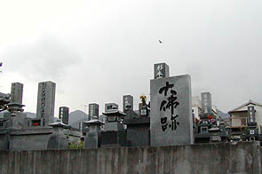 その墓地の一画に「大佛跡」と刻まれた記念碑がぽつんとある。 裏書きも何もなくただ「大佛跡」である。あまりにも簡単なその記念碑は淋しく消えていった大佛の別府における地位を如実に語っているような気がしてならない。私は別府滞在中、地元の年配の方に会う度に「別府大仏っていつ頃まで中に入れてたんですか」「中に入った事、ありますか」と質問し続けかなり怪しがられたのだが、大仏に関してはほとんどの方が「ああ、あったねえ・・・」程度の認識であまり感心がない様子だった。 ま、無理もないですけど。 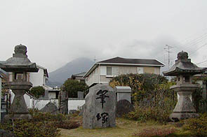 隣には何故か筆塚がある。しかし左右の灯籠は大仏建造当時からのモノだ。この灯籠だけが別府大仏に関する遺物なのだろうか。 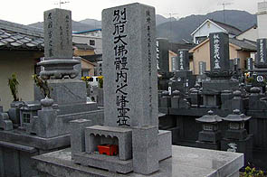 記念碑の隣の墓地を見渡す。すると記念碑の近くに別府大仏體内之諸霊位という石塔が建っているではないか。 大仏の胎内にあった遺骨の一部をここに納骨してあるのだろう。 裏書きを見ると榮信寺前住職の寺庭（奥さんですな）さんが別府大仏解体を受けてこれをつくったそうだ。
何だかもの寂しい気分で大仏跡地を去ろうとしたが、ふとお寺の一画にある離れの中を覗き込むと・・・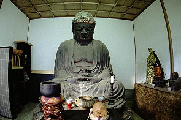 おおお、これは別府大仏のミニチュアではないか。 恐らく大仏建造に先駆けてつくられた原形だろう。 鋳造製の大仏（の原形）は2.5メートル位。10分の１スケールなのだろう。 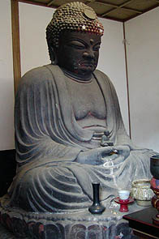 「大仏山縁起録」によれば山崎朝雲の高弟の入江爲義という彫刻家が製作したそうだ。 山崎朝雲といえばあの高村光雲の高弟。高村光雲といえば若い頃ハリボテの見世物大仏を造ったやんちゃなお方。 当時、彫刻界といえばそんなに広い世界ではなかったにせよ、何か因縁めいたモノを感じる。 もう少し時期が早かったら高村光雲自身が大仏の原形つくっていたりして。 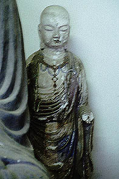 大仏（の原形）の後ろに隠れるように立っているお地蔵さんはかつて大仏の中にあったものだろう。 ロケットパンチ発射済みなれど未だ健在なり。 今やこの2つの像と何枚かの写真でしか偲ぶ事の出来ない別府大仏だがコンクリ大仏の先駆者としての偉業は揺るぐものではない。 全国の大仏舎弟よ、リスペクトすべし。
2002.11.
珍寺大道場 HOME